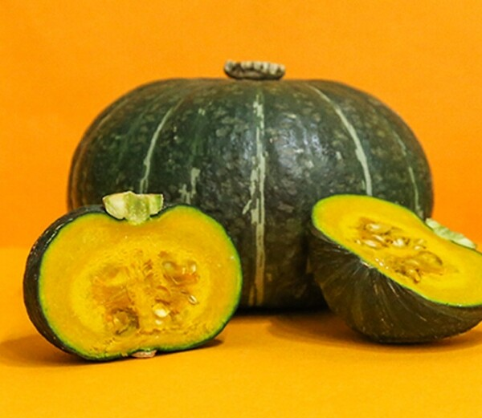
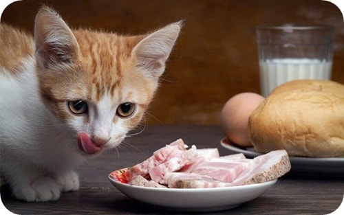

고양이가 먹으면 위험한 음식
- 초콜릿 – 고양이에게 독성이 되는 성분 존재
- 닭뼈 등의 작은 뼈 – 장기 손상 위험
- 포도/건포도 – 신장 손상
- 카페인 – 중독 증상
- 양파와 마늘 – 혈소판 파괴
- 유제품 – 고양이 유당분해효소 부족

고양이 단호박 섭취가 헤어볼 배출에 도움이 된다고?
단호박은 섬유질이 많은 음식으로 고양이의 소화 과정을 돕습니다. 그래서 고양이 변비에도 효능이 있습니다. 또한 포만감을 쉽게 느끼게 하여 고양이 다이어트에 도움이 됩니다. 단호박은 고양이 장 건강에 긍정적인 영향을 끼치기에 헤어볼 배출에도 큰 도움이 됩니다.

고양이가 조심해야 할 의외의 음식
- 익지 않은 토마토와 감자
- 사람 참치캔
- 등푸른 생선
- 해산물